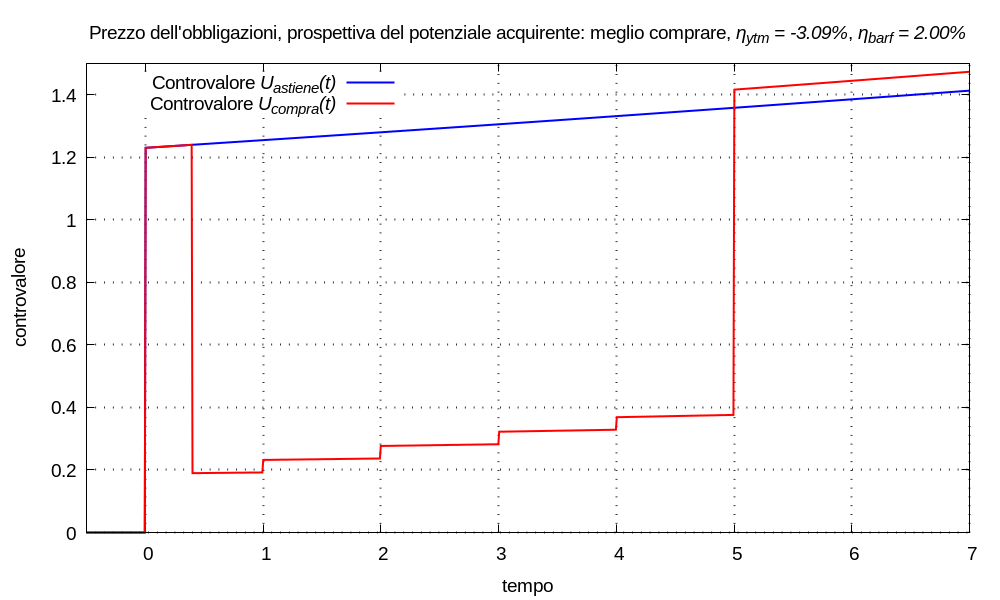
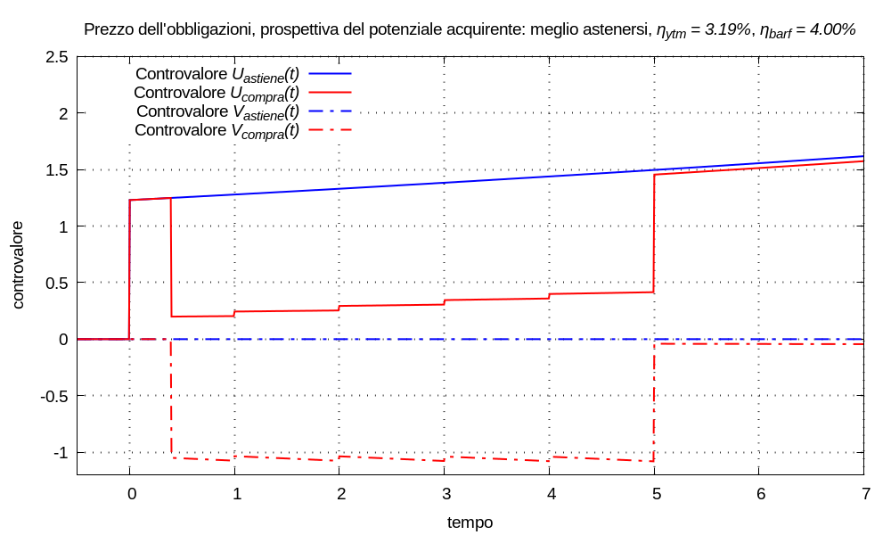

Immaginiamo che Barf non possegga quote dell’obbligazione; egli s’affaccia sul mercato come potenziale acquirente.
Barf detiene un portafoglio finanziario, di cui l’obbligazione non fa parte, simulabile con un multimetro; egli spera che, in futuro, il portafoglio complementare al titolo incrementerà il controvalore con risposta esponenziale al tasso annuale ηbarf; tale tasso atteso varrà sia che Barf acquisti l’obbligazione e la detenga fino a scadenza, sia che non partecipi all’investimento tenendosi il portafoglio cosí com’è.
All’istante tP il controvalore del portafoglio complementare sia Ubarf(tP); sfruttando le proprietà della funzione esponenziale, rappresentiamo questa giacenza iniziale come risultato d’una movimentazione impulsiva all’istante tP:
Ubarf(tP) δ(t - tP)
Se Barf acquisterà l’obbligazione: all’istante tP liquiderà una parte del portafoglio esistente, ottenendo il capitale P, e immediatamente lo utilizzerà per comprare quote; la movimentazione del portafoglio risulterà:
Mcompra(t) = [Ubarf(tP) - P] δ(t - tP) +
+ Σk=0→K Ccedola,k δ(t - tk) + Crimborso δ(t - trimborso)
in cui Ubarf(tP) > 0, Ccedola,k ≥ 0, Crimborso > 0 perché sono tutti versamenti nel multimetro; -P < 0 perché è un prelievo dal multimetro; il controvalore del portafoglio complementare risulterà:
Ucompra(t) = [Ubarf(tP) - P] u(t - tP) esp[λbarf (t - tP)] +
+ Σk=0→K Ccedola,k u(t - tk) esp[λbarf (t - tk)] +
+ Crimborso u(t - trimborso) esp[λbarf (t - trimborso)]
Se invece Barf s’asterrà dall’acquistare l’obbligazione, la movimentazione risulterà:
Mastiene(t) = Ubarf(tP) δ(t - tP)
e il controvalore del portafoglio:
Uastiene(t) = Ubarf(tP) u(t - tP) esp[λbarf (t - tP)]
La formulazione de Il Criterio è la soluzione della disequazione:
∀t ≥ trimborso Ucompra(t) ⋛ Uastiene(t)
che abbiamo visto poter ridurre a:
Ucompra(trimborso) ⋛ Uastiene(trimborso)
quindi se risulta:
Osservato che Uastiene(t) compare come addendo nell’espressione di Ucompra(t), definiamo i controvalori:
Vcompra(t) = Ucompra(t) - Uastiene(t)
Vastiene(t) = 0
cioè:
Vcompra(t) = - P u(t - tP) esp[λbarf (t - tP)] +
+ Σk=0→K Ccedola,k u(t - tk) esp[λbarf (t - tk)] +
+ Crimborso u(t - trimborso) esp[λbarf (t - trimborso)]
il fatto che possiamo eliminare questo addendo significa che i risultati che otterremo nel seguito saranno indipendenti dal controvalore iniziale del portafoglio; osserviamo esplicitamente che l’esponenziale - P esp[λbarf (t - tP)], avendo ampiezza negativa, è una funzione monotòna decrescente. Allora possiamo riscrivere la disequazione de Il Criterio come:
Vcompra(trimborso) ⋛ 0 ⇒ Ucompra(trimborso) ⋛ Uastiene(trimborso)
cioè, per applicare Il Criterio, è sufficiente calcolare il valore Vcompra(trimborso); ovviamente risulta:
Riscriviamo il controvalore Vcompra(trimborso) come:
Vcompra(trimborso) = A esp[λbarf (trimborso - tP)]
in cui A è la somma di tutti gl’impulsi dell’acquisto, delle cedole e del rimborso attualizzati all’istante tP secondo il tasso λbarf:
A = - P esp[λbarf (tP - tP)] +
+ Σk Ccedola,k esp[λbarf (tP - tk)] + Crimborso esp[λbarf (tP - trimborso)] =
= - P + Σk Ccedola,k esp[λbarf (tP - tk)] + Crimborso esp[λbarf (tP - trimborso)]
Comprendiamo come si possa riformulare la disequazione de Il Criterio come:
A ⋛ 0 ⇒ Vcompra(trimborso) ⋛ 0
cioè, per applicare Il Criterio, è sufficiente calcolare il valore A e conoscere il valore P; quindi:
Nella precedente sezione della discussione sul prezzo dell’obbligazioni abbiamo definito il rendimento a scadenza (uguale rendimento effettivo, uguale Yield to Maturity) come il tasso di variazione ηytm = espm1(λytm), rispetto all’unità di tempo, che soddisfa l’equazione d’attualizzazione equivalente agl’effetti futuri per t ≥ trimborso:
P = Σk Ccedola,k esp[λytm (tP - tk)] + Crimborso esp[λytm (tP - trimborso)]
cioè λytm è il valore per cui risulta:
0 = - P + Σk Ccedola,k esp[λytm (tP - tk)] + Crimborso esp[λytm (tP - trimborso)]
e questa è l’espressione di A quando λbarf = λytm. Abbiamo già osservato la proporzionalità inversa tra la remunerazione (e il rendimento) e il valore attualizzato dei capitali; perciò analizziamo l’espressione di A come funzione di λbarf:
A(λbarf) = - P + Σk Ccedola,k esp[λbarf (tP - tk)] + Crimborso esp[λbarf (tP - trimborso)]
comprendiamo che è possibile riformulare la disequazione de Il Criterio come:
ηbarf ⋛ ηytm ⇒ λbarf ⋛ λytm ⇒ A ⋚ 0
cioè, per applicare Il Criterio, è sufficiente conoscere il valore ηbarf e calcolare il valore ηytm; perciò se:
Possiamo riassumere tutte le deduzioni che trasformano il criterio:
ηbarf ⋚ ηytm ⇒ λbarf ⋚ λytm ⇒ A ⋛ 0 ⇒
⇒ Vcompra(trimborso) ⋛ Vastiene(trimborso) = 0 ⇒
⇒ Ucompra(trimborso) ⋛ Uastiene(trimborso) ⇒
⇒ ∀t ≥ trimborso Ucompra(t) ⋛ Uastiene(t)
Esempio (sulla prospettiva dell’acquirente) Barf possiede un portafoglio di titoli finanziari che non include quote d’un’obbligazione ‘pincopalla’. All’istante tinizio = 0 il controvalore del portafoglio vale U(tinizio) = 1,23; Barf spera che, in futuro, indipendentemente dalla movimentazione, il portafoglio complementare al titolo abbia incremento esponenziale con remunerazione λbarf = log1p(ηbarf) che specificheremo nel seguito.
Il contratto dell’obbligazione ‘pincopalla’ prescrive il pagamento di cedole e un rimborso finale descritti dalla seguente tupla di valori al netto di tutto:
{ (1; 0,04), (2; 0,04), (3; 0,04), (4; 0,04), (5; 0,04), (5; 1), }il Tribunal ha stabilito che: le quote possano essere vendute al tempo tP = 0,4 al prezzo P = 1,05 (che include il rateo della prossima cedola).
All’istante tP, Barf si trova di fronte a due universi possibili:
- se acquisterà l’obbligazione, la movimentazione risulterà, ∀t ≥ tinizio:
Mcompra(t) = U(tinizio) δ(t - tinizio) - P δ(t - tP) ++ Σk=1→5 Ck δ(t - tk) + Crimborso δ(t - trimborso)e il controvalore:
Ucompra(t) = U(tinizio) u(t - tinizio) esp[λbarf (t - tinizio)] +- P u(t - tP) esp[λbarf (t - tP)] ++ Σk=1→5 Ck u(t - tk) esp[λbarf (t - tk)] ++ Crimborso δ(t - trimborso) esp[λbarf (t - trimborso)]- se s’asterrà dall’acquistare l’obbligazione e terrà il portafoglio cosí com’è, la movimentazione risulterà, ∀t ≥ tinizio:
Mastiene(t) = U(tinizio) δ(t - tinizio)e il controvalore:
Uastiene(t) = U(tinizio) u(t - tinizio) esp[λbarf (t - tinizio)]Con il cambiamento di variabile τ = t - tP, possiamo scrivere l’equazione per il calcolo del rendimento a scadenza dell’obbligazione:
P = Σk=1→5 Ck esp(-λytm τk) + Crimborso esp(-λytm τrimborso)risolvendo numericamente risulta:
λytm ≈ 0,0314024 ηytm = espm1(λytm) ≈ 3.19007%
- Convenienza ad acquistare Supponiamo che sia:
ηbarf = 2% λbarf = log1p(ηbarf) ≈ 0,0198026essendo ηbarf < ηytm a Barf conviene acquistare l’obbligazione e detenerla fino a scadenza. Verifichiamo Il Criterio; il valore attualizzato all’istante tP del prezzo, delle cedole e del rimborso, con il tasso ηbarf risulta:
A ≈ 0,0529714 > 0da cui:
Vcompra(trimborso) ≈ 0,0580232 > Vastiene(trimborso) = 0in definitiva:
Ucompra(trimborso) ≈ 1,41604 > Uastiene(trimborso) ≈ 1,35802
- Convenienza ad astenersi Supponiamo che sia:
ηbarf = 4% λbarf = log1p(ηbarf) ≈ 0,0392207essendo ηbarf > ηytm a Barf conviene astenersi dall’acquistare l’obbligazione e tenere il portafoglio cosí com’è. Verifichiamo Il Criterio; il valore attualizzato all’istante tP del prezzo, delle cedole e del rimborso, con il tasso ηbarf risulta:
A ≈ -0,0341880 < 0da cui:
Vcompra(trimborso) ≈ -0,0409475 < Vastiene(trimborso) ≈ 0in definitiva:
Ucompra(trimborso) ≈ 1,45554 < Uastiene(trimborso) ≈ 1,49648